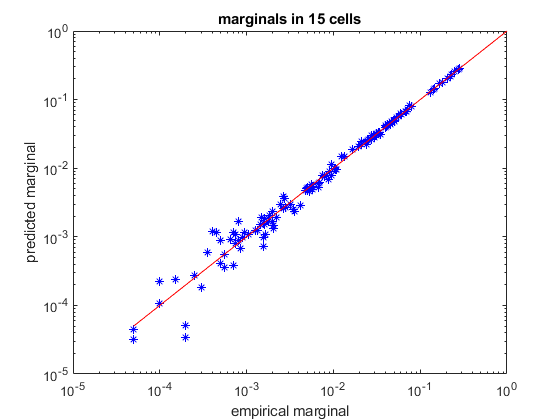
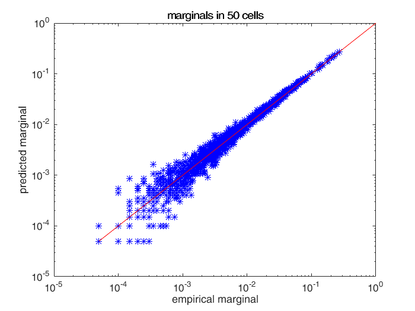
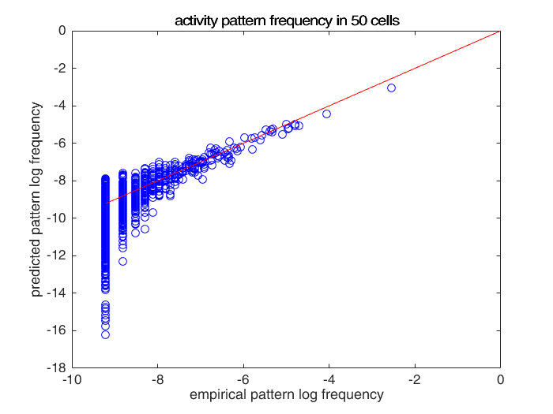
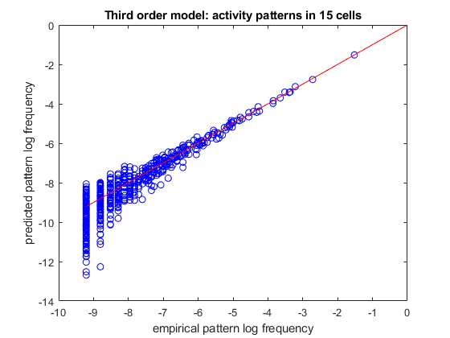
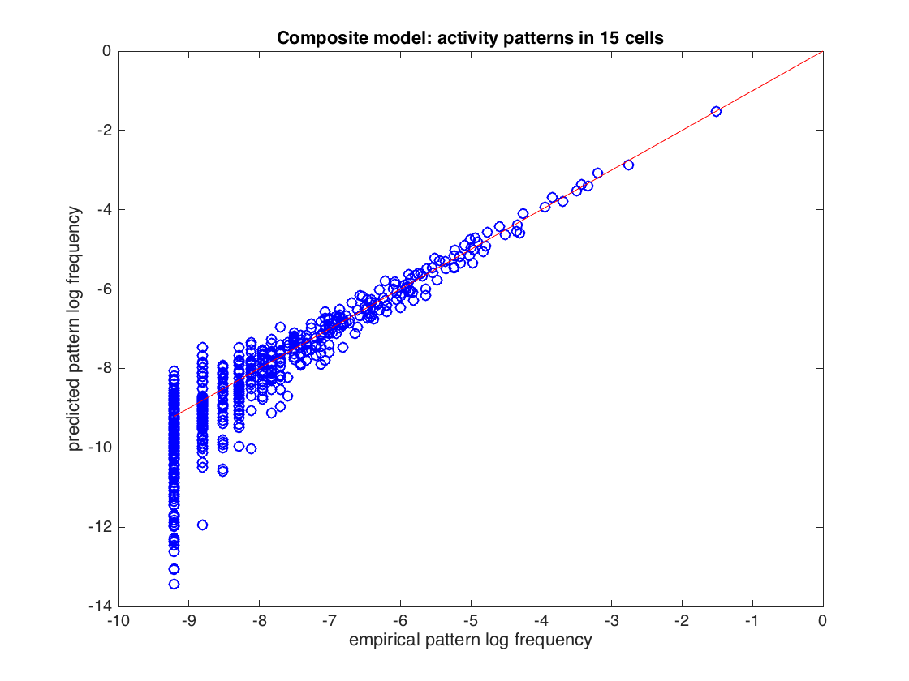

Contents
part 1: working with small distributions of neurons (exhaustively)
load example15
[ncells,nsamples] = size(spikes15);
idx_train = randperm(nsamples,ceil(nsamples/2));
idx_test = setdiff(1:nsamples,idx_train);
samples_train = spikes15(:,idx_train);
samples_test = spikes15(:,idx_test);
model = maxent.createModel(ncells,'kising');
model = maxent.trainModel(model,samples_train,'threshold',1);
empirical_distribution = maxent.getEmpiricalModel(samples_test);
model_logprobs = maxent.getLogProbability(model,empirical_distribution.words);
test_dkl = maxent.dkl(empirical_distribution.logprobs,model_logprobs);
fprintf('Kullback-Leibler divergence from test set: %f\n',test_dkl);
model_entropy = maxent.getEntropy(model);
fprintf('Model entropy: %.03f empirical dataset entropy: %.03f\n', model_entropy, empirical_distribution.entropy);
marginals_data = maxent.getEmpiricalMarginals(samples_test,model);
marginals_model = maxent.getMarginals(model);
figure
loglog(marginals_data,marginals_model,'b*');
hold on;
minval = min([marginals_data(marginals_data>0)]);
plot([minval 1],[minval 1],'-r');
xlabel('empirical marginal');
ylabel('predicted marginal');
title(sprintf('marginals in %d cells',ncells));
Training to threshold: 1.000 standard deviations
Maximum MSE: 1.000
156/Inf MSE=0.014 (mean), 1.872 (max) [10] DKL: 0.089
converged (marginals match)
Standard deviations from marginals: 0.061 (mean), 0.996 (max) [9] DKL: 0.089
Kullback-Leibler divergence from test set: 0.109675
Model entropy: 6.467 empirical dataset entropy: 6.369

part 2: working with larger distributions of neurons (MCMC)
load example50
[ncells,nsamples] = size(spikes50);
idx_train = randperm(nsamples,ceil(nsamples/2));
idx_test = setdiff(1:nsamples,idx_train);
samples_train = spikes50(:,idx_train);
samples_test = spikes50(:,idx_test);
model = maxent.createModel(50,'pairwise');
model = maxent.trainModel(model,samples_train,'threshold',1.5);
marginals_data = maxent.getEmpiricalMarginals(samples_test,model);
marginals_model = maxent.getMarginals(model,'nsamples',size(samples_test,2));
figure
loglog(marginals_data,marginals_model,'b*');
hold on;
minval = min([marginals_data(marginals_data>0)]);
plot([minval 1],[minval 1],'-r');
xlabel('empirical marginal');
ylabel('predicted marginal');
title(sprintf('marginals in %d cells',ncells));
disp('Normalizing model...');
model = maxent.wangLandau(model,'binsize',0.1,'depth',15);
limited_empirical_distribution = maxent.getEmpiricalModel(samples_test,'min_count',2);
model_logprobs = maxent.getLogProbability(model,limited_empirical_distribution.words);
figure
plot(limited_empirical_distribution.logprobs,model_logprobs,'bo');
hold on;
minval = min(limited_empirical_distribution.logprobs);
plot([minval 0],[minval 0],'-r');
xlabel('empirical pattern log frequency');
ylabel('predicted pattern log frequency');
title(sprintf('activity pattern frequency in %d cells',ncells));
empirical_distribution = maxent.getEmpiricalModel(samples_test);
fprintf('Model entropy: %.03f bits, empirical entropy (test set): %.03f bits\n',model.entropy,empirical_distribution.entropy);
samples_simulated = maxent.generateSamples(model,numel(idx_test));
simulated_empirical_distribution = maxent.getEmpiricalModel(samples_simulated);
fprintf('Entropy of simulated data: %.03f bits\n',simulated_empirical_distribution.entropy);
Training to threshold: 1.500 standard deviations
Maximum samples: 17778 maximum MSE: 3.375
338/Inf samples=4338 MSE=8.138 (mean), 68.376 (max) [30]
408/Inf samples=8755 MSE=4.396 (mean), 49.440 (max) [17]
449/Inf samples=13186 MSE=3.720 (mean), 69.128 (max) [2]
478/Inf samples=17612 MSE=2.567 (mean), 35.248 (max) [40]
503/Inf samples=17778 MSE=2.016 (mean), 24.021 (max) [40]
528/Inf samples=17778 MSE=1.916 (mean), 30.722 (max) [12]
553/Inf samples=17778 MSE=1.674 (mean), 26.987 (max) [12]
578/Inf samples=17778 MSE=1.586 (mean), 16.304 (max) [45]
603/Inf samples=17778 MSE=1.753 (mean), 9.394 (max) [31]
628/Inf samples=17778 MSE=1.993 (mean), 11.920 (max) [2]
653/Inf samples=17778 MSE=1.826 (mean), 12.493 (max) [1140]
678/Inf samples=17778 MSE=1.755 (mean), 14.302 (max) [1140]
703/Inf samples=17778 MSE=1.720 (mean), 10.222 (max) [1140]
728/Inf samples=17778 MSE=1.472 (mean), 7.022 (max) [1147]
753/Inf samples=17778 MSE=1.504 (mean), 6.722 (max) [1176]
778/Inf samples=17778 MSE=1.533 (mean), 9.090 (max) [12]
803/Inf samples=17778 MSE=1.496 (mean), 10.559 (max) [12]
828/Inf samples=17778 MSE=1.526 (mean), 6.851 (max) [12]
853/Inf samples=17778 MSE=1.446 (mean), 4.788 (max) [43]
878/Inf samples=17778 MSE=1.330 (mean), 5.673 (max) [1150]
903/Inf samples=17778 MSE=1.409 (mean), 5.199 (max) [1264]
928/Inf samples=17778 MSE=1.370 (mean), 3.929 (max) [2]
converged (marginals match)
Normalizing model...
[...............]
Model entropy: 17.527 bits, empirical entropy (test set): 11.967 bits
Entropy of simulated data: 12.483 bits
 
part 3: specifying a custom list of correlations
load example15
[ncells,nsamples] = size(spikes15);
idx_train = randperm(nsamples,ceil(nsamples/2));
idx_test = setdiff(1:nsamples,idx_train);
samples_train = spikes15(:,idx_train);
samples_test = spikes15(:,idx_test);
correlations = cat(1,num2cell(nchoosek(1:ncells,1),2), ...
num2cell(nchoosek(1:ncells,2),2),...
num2cell(nchoosek(1:ncells,3),2));
model = maxent.createModel(ncells,'highorder',correlations);
model = maxent.trainModel(model,samples_train,'threshold',1);
limited_empirical_distribution = maxent.getEmpiricalModel(samples_test,'min_count',2);
model_logprobs = maxent.getLogProbability(model,limited_empirical_distribution.words);
figure
plot(limited_empirical_distribution.logprobs,model_logprobs,'bo');
hold on;
minval = min(limited_empirical_distribution.logprobs);
plot([minval 0],[minval 0],'-r');
xlabel('empirical pattern log frequency');
ylabel('predicted pattern log frequency');
title(sprintf('Third order model: activity patterns in %d cells',ncells));
Training to threshold: 1.000 standard deviations
Maximum MSE: 1.000
19/Inf MSE=8.889 (mean), 2863.190 (max) [12] DKL: 0.447
41/Inf MSE=2.894 (mean), 47.171 (max) [12] DKL: 0.183
63/Inf MSE=1.270 (mean), 18.680 (max) [32] DKL: 0.130
85/Inf MSE=0.630 (mean), 23.237 (max) [13] DKL: 0.108
107/Inf MSE=0.276 (mean), 28.068 (max) [2] DKL: 0.097
129/Inf MSE=0.135 (mean), 12.790 (max) [1] DKL: 0.091
151/Inf MSE=0.098 (mean), 10.719 (max) [12] DKL: 0.088
173/Inf MSE=0.079 (mean), 4.787 (max) [1] DKL: 0.086
195/Inf MSE=0.050 (mean), 2.911 (max) [12] DKL: 0.085
217/Inf MSE=0.039 (mean), 2.401 (max) [12] DKL: 0.084
239/Inf MSE=0.032 (mean), 2.481 (max) [351] DKL: 0.083
261/Inf MSE=0.025 (mean), 1.990 (max) [351] DKL: 0.082
283/Inf MSE=0.016 (mean), 1.059 (max) [351] DKL: 0.081
converged (marginals match)
Standard deviations from marginals: 0.125 (mean), 0.992 (max) [351] DKL: 0.081
 
part 4: constructing composite models
load example15
[ncells,nsamples] = size(spikes15);
idx_train = randperm(nsamples,ceil(nsamples/2));
idx_test = setdiff(1:nsamples,idx_train);
samples_train = spikes15(:,idx_train);
samples_test = spikes15(:,idx_test);
third_order_correlations = num2cell(nchoosek(1:ncells,3),2);
model_indep = maxent.createModel(ncells,'indep');
model_ksync = maxent.createModel(ncells,'ksync');
model_thirdorder = maxent.createModel(ncells,'highorder',third_order_correlations);
model = maxent.createModel(ncells,'composite',{model_indep,model_ksync,model_thirdorder});
model = maxent.trainModel(model,samples_train,'threshold',1);
limited_empirical_distribution = maxent.getEmpiricalModel(samples_test,'min_count',2);
model_logprobs = maxent.getLogProbability(model,limited_empirical_distribution.words);
figure
plot(limited_empirical_distribution.logprobs,model_logprobs,'bo');
hold on;
minval = min(limited_empirical_distribution.logprobs);
plot([minval 0],[minval 0],'-r');
xlabel('empirical pattern log frequency');
ylabel('predicted pattern log frequency');
title(sprintf('Composite model: activity patterns in %d cells',ncells));
Training to threshold: 1.000 standard deviations
Maximum MSE: 1.000
24/Inf MSE=0.665 (mean), 76.452 (max) [12] DKL: 0.129
50/Inf MSE=0.260 (mean), 7.199 (max) [24] DKL: 0.112
76/Inf MSE=0.100 (mean), 5.460 (max) [24] DKL: 0.107
101/Inf MSE=0.056 (mean), 3.783 (max) [150] DKL: 0.104
127/Inf MSE=0.033 (mean), 2.032 (max) [150] DKL: 0.102
152/Inf MSE=0.028 (mean), 2.760 (max) [24] DKL: 0.101
178/Inf MSE=0.021 (mean), 1.503 (max) [24] DKL: 0.100
converged (marginals match)
Standard deviations from marginals: 0.134 (mean), 0.974 (max) [24] DKL: 0.100